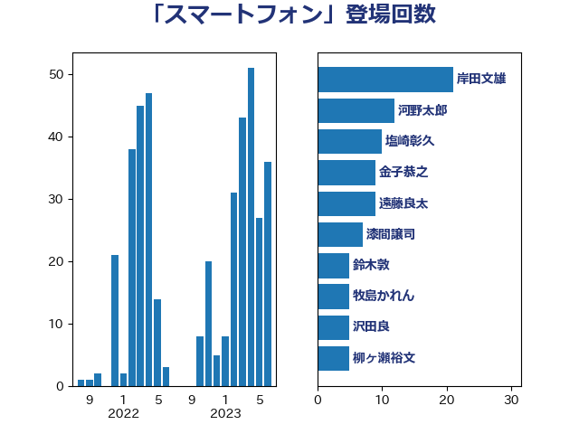

単語「スマートフォン」

| 岸田文雄 | 自由民主党 | 21 回 |
| 河野太郎 | 自由民主党 | 12 回 |
| 塩崎彰久 | 自由民主党 | 10 回 |
| 金子恭之 | 自由民主党 | 9 回 |
| 遠藤良太 | 日本維新の会 | 9 回 |
| 漆間譲司 | 日本維新の会 | 7 回 |
| 鈴木敦 | 国民民主党 | 5 回 |
| 牧島かれん | 自由民主党 | 5 回 |
| 沢田良 | 日本維新の会 | 5 回 |
| 柳ヶ瀬裕文 | 日本維新の会 | 5 回 |
| 末松信介 | 自由民主党 | 5 回 |
| 堀場幸子 | 日本維新の会 | 5 回 |
| 伊佐進一 | 公明党 | 5 回 |
| 野間健 | 立憲民主党 | 4 回 |
| 萩生田光一 | 自由民主党 | 4 回 |
| 芳賀道也 | 国民民主党 | 4 回 |
| 岬麻紀 | 日本維新の会 | 4 回 |
| 中西祐介 | 自由民主党 | 4 回 |
| 鈴木俊一 | 自由民主党 | 3 回 |
| 荒井優 | 立憲民主党 | 3 回 |
| 竹内真二 | 公明党 | 3 回 |
| 田村まみ | 国民民主党 | 3 回 |
| 永岡桂子 | 自由民主党 | 3 回 |
| 山本博司 | 公明党 | 3 回 |
| 加藤勝信 | 自由民主党 | 3 回 |
| 伴野豊 | 立憲民主党 | 3 回 |
| 高木かおり | 日本維新の会 | 2 回 |
| 阿部弘樹 | 日本維新の会 | 2 回 |
| 鈴木義弘 | 国民民主党 | 2 回 |
| 輿水恵一 | 公明党 | 2 回 |
| 西野太亮 | 自由民主党 | 2 回 |
| 藤巻健太 | 日本維新の会 | 2 回 |
| 若松謙維 | 公明党 | 2 回 |
| 稲津久 | 公明党 | 2 回 |
| 福島みずほ | 社会民主党 | 2 回 |
| 石川香織 | 立憲民主党 | 2 回 |
| 田中健 | 国民民主党 | 2 回 |
| 牧山ひろえ | 立憲民主党 | 2 回 |
| 渡辺孝一 | 自由民主党 | 2 回 |
| 池下卓 | 日本維新の会 | 2 回 |
| 櫻井周 | 立憲民主党 | 2 回 |
| 松本剛明 | 自由民主党 | 2 回 |
| 村田享子 | 立憲民主党 | 2 回 |
| 斎藤アレックス | 国民民主党 | 2 回 |
| 後藤茂之 | 自由民主党 | 2 回 |
| 市村浩一郎 | 日本維新の会 | 2 回 |
| 工藤彰三 | 自由民主党 | 2 回 |
| 川田龍平 | 立憲民主党 | 2 回 |
| 山岡達丸 | 立憲民主党 | 2 回 |
| 小沢雅仁 | 立憲民主党 | 2 回 |
| 住吉寛紀 | 日本維新の会 | 2 回 |
| 中川貴元 | 自由民主党 | 2 回 |
| 中司宏 | 日本維新の会 | 2 回 |
| 三上えり | 立憲民主党 | 2 回 |
| 鳩山二郎 | 自由民主党 | 1 回 |
| 高見康裕 | 自由民主党 | 1 回 |
| 高市早苗 | 自由民主党 | 1 回 |
| 音喜多駿 | 日本維新の会 | 1 回 |
| 長谷川英晴 | 自由民主党 | 1 回 |
| 長友慎治 | 国民民主党 | 1 回 |
| 野田国義 | 立憲民主党 | 1 回 |
| 野上浩太郎 | 自由民主党 | 1 回 |
| 道下大樹 | 立憲民主党 | 1 回 |
| 赤木正幸 | 日本維新の会 | 1 回 |
| 西村智奈美 | 立憲民主党 | 1 回 |
| 西村康稔 | 自由民主党 | 1 回 |
| 西岡秀子 | 国民民主党 | 1 回 |
| 若宮健嗣 | 自由民主党 | 1 回 |
| 簗和生 | 自由民主党 | 1 回 |
| 笠井亮 | 日本共産党 | 1 回 |
| 空本誠喜 | 日本維新の会 | 1 回 |
| 神谷裕 | 立憲民主党 | 1 回 |
| 神谷政幸 | 自由民主党 | 1 回 |
| 石井苗子 | 日本維新の会 | 1 回 |
| 石井啓一 | 公明党 | 1 回 |
| 猪瀬直樹 | 日本維新の会 | 1 回 |
| 清水貴之 | 日本維新の会 | 1 回 |
| 森屋隆 | 立憲民主党 | 1 回 |
| 柴田巧 | 日本維新の会 | 1 回 |
| 柘植芳文 | 自由民主党 | 1 回 |
| 松野明美 | 日本維新の会 | 1 回 |
| 日下正喜 | 公明党 | 1 回 |
| 斉藤鉄夫 | 公明党 | 1 回 |
| 平林晃 | 公明党 | 1 回 |
| 川合孝典 | 国民民主党 | 1 回 |
| 山際大志郎 | 自由民主党 | 1 回 |
| 山本香苗 | 公明党 | 1 回 |
| 山本剛正 | 日本維新の会 | 1 回 |
| 尾崎正直 | 自由民主党 | 1 回 |
| 小野泰輔 | 日本維新の会 | 1 回 |
| 小里泰弘 | 自由民主党 | 1 回 |
| 小森卓郎 | 自由民主党 | 1 回 |
| 小林鷹之 | 自由民主党 | 1 回 |
| 小倉將信 | 自由民主党 | 1 回 |
| 室井邦彦 | 日本維新の会 | 1 回 |
| 奥野総一郎 | 立憲民主党 | 1 回 |
| 大野泰正 | 自由民主党 | 1 回 |
| 大西健介 | 立憲民主党 | 1 回 |
| 大石あきこ | れいわ新選組 | 1 回 |
| 大島敦 | 立憲民主党 | 1 回 |
| 大家敏志 | 自由民主党 | 1 回 |
| 大塚耕平 | 国民民主党 | 1 回 |
| 塩田博昭 | 公明党 | 1 回 |
| 堂故茂 | 自由民主党 | 1 回 |
| 土田慎 | 自由民主党 | 1 回 |
| 國場幸之助 | 自由民主党 | 1 回 |
| 吉田宣弘 | 公明党 | 1 回 |
| 吉田久美子 | 公明党 | 1 回 |
| 古川康 | 自由民主党 | 1 回 |
| 佐藤英道 | 公明党 | 1 回 |
| 佐々木さやか | 公明党 | 1 回 |
| 伊藤渉 | 公明党 | 1 回 |
| 伊藤孝恵 | 国民民主党 | 1 回 |
| 今井絵理子 | 自由民主党 | 1 回 |
| 仁比聡平 | 日本共産党 | 1 回 |
| 仁木博文 | 無所属 | 1 回 |
| 井原巧 | 自由民主党 | 1 回 |
| 井上哲士 | 日本共産党 | 1 回 |
| 中条きよし | 日本維新の会 | 1 回 |
| 中山展宏 | 自由民主党 | 1 回 |
| 一谷勇一郎 | 日本維新の会 | 1 回 |